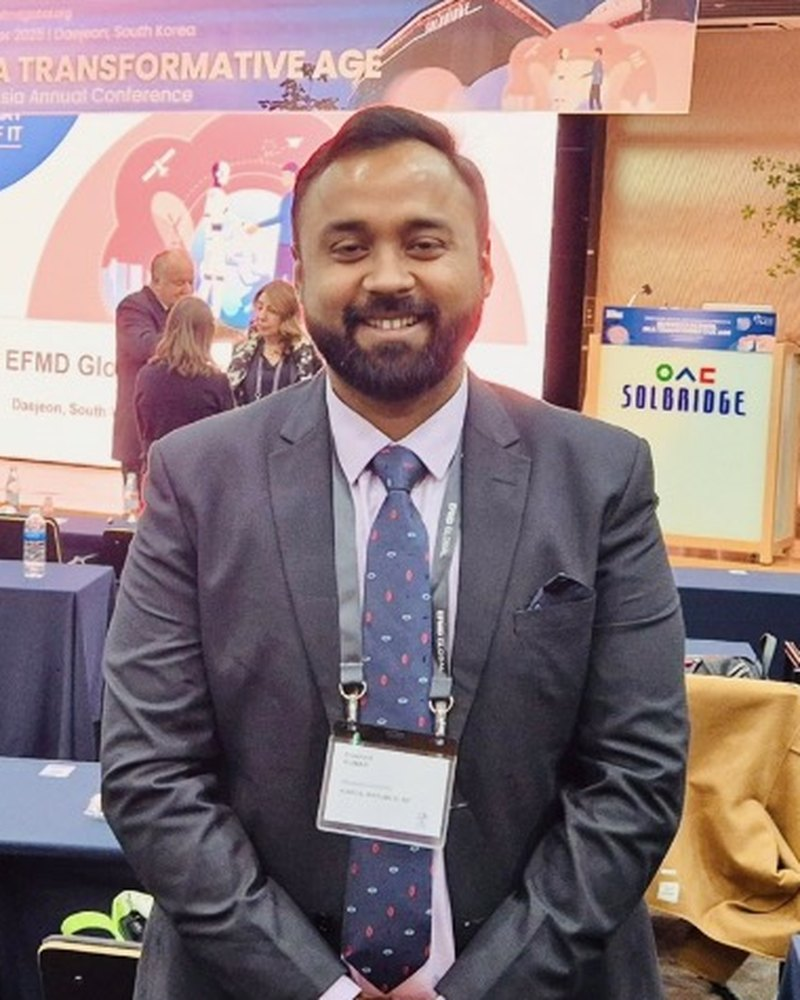

Lab Director
Prashant Kumar
Assistant Professor, Department of AI & Big Data, Woosong University
Research focused on prognostics and health management for electric machines, with an emphasis on AI-driven fault detection, remaining useful life estimation and battery health assessment. Earned a Ph.D. from IIT (ISM) Dhanbad in 2022 with doctoral research on deep learning based fault detection in electrical machines, and worked at Dongguk University in Seoul from 2022 to 2025 before joining Woosong.
1,625Citations
21h-index
32i10-index
2Special issues as Guest Editor
Google Scholar, November 2026.
Education
- 2022Ph.D.Indian Institute of Technology (ISM), Dhanbad, India
- 2017M.TechIndian Institute of Technology (ISM), Dhanbad, India
- 2014B.Tech, Electrical EngineeringBiju Patnaik University of Technology, Odisha, India
Experience
- 2025 – presentAssistant ProfessorWoosong University, Daejeon, South Korea
- 2023 – 2025Assistant ProfessorDongguk University, Seoul, South Korea
- 2022 – 2023Visiting ProfessorDongguk University, Seoul, South Korea
Research interests
- Prognostics & Health Management
- Smart Manufacturing & Industry 4.0
- AI fault diagnosis of rotating machinery
- PHM of electric mobility systems
- Mine winder drives & electrical safety
- Fault detection in electrical drives
Editorial roles
Guest Editor · Machines (MDPI)Special Issue: Prognostics and Health Management for Machinery Safety and Maintenance
Guest Editor · Mathematics (MDPI)Special Issue: Recent Advances in Machine Learning and Deep Learning Theories: Towards Intelligent Fault Diagnosis
Publications
Selected publications
MOST CITED
- 2021Cited 281×
- 2021Cited 100×
- 2022Cited 81×
- 2023Cited 76×
MOST RECENT
- 2026
- 2026
- 2026
Citation counts from Google Scholar, November 2026.